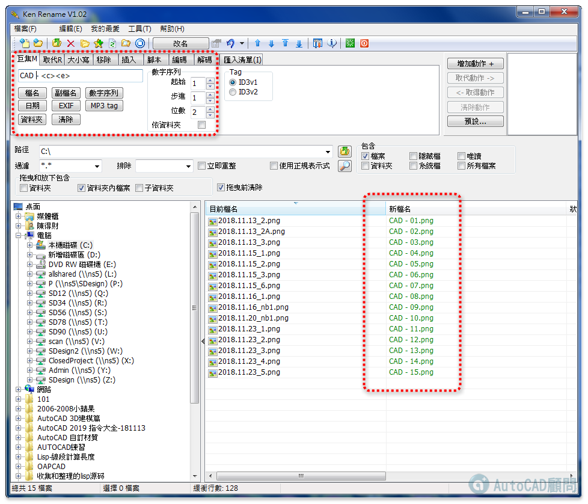
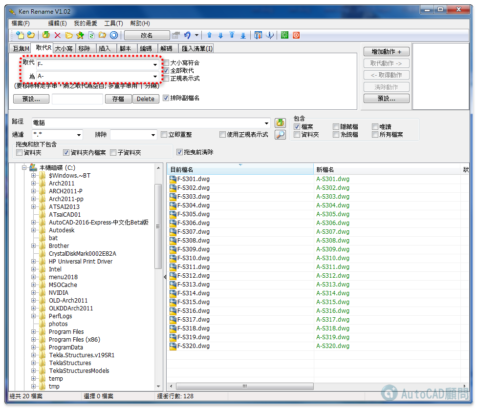

工作中常常需要更改檔名
如：建管單位送二維執照圖，就必須更改pdf檔名，一個一個改很花時間
所以這時候就需要「檔案更名工具」，可以來看看教學～
好用的話請幫忙推文，不要灌水回覆喔～
👇專屬B會員請直接前往專屬資源版區下載
[專屬分享]檔案批次更名工具
Ken Rename | 檔案批次更名工具 | PDF JPG PNG | (2021)
https://youtu.be/GN_MWDXsc0E
https://www.facebook.com/autocad.tw/videos/499428230465124/